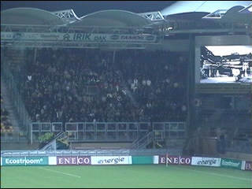

| Roda JC - Fortuna Sittard 1-0 28 november 2001 |
Het PLS bekroond met een kerstster.

Er waren 700 Fortunasupporters meer dan vorig
jaar ;-)
En zowaar volle noord-vakken!
De laatste derby in de ere-divisie?
In de 20e minuut kan Landerl vrij op Kalac af.
Terwijl de keeper al ligt schiet de Fortuna-spits
de bal naast het lege doel.
Tchoutang regelt het verkeer.
Een bedelaar, twee Macs en drie Helden-fans.
RML'er Henk Muijs.
Strategisch overleg tussen Gerritsen en Cramb.
Steward ruimt een vuurstaaf.
Nadat er een bom ontploft ontstaat er enige
verwarring voor het doel van Hesp. Anastasiou
krijgt de bal voor zijn voeten en scoort 1-0.
Het Roda-shirt vliegt over het dolblije publiek.
Kalac die een slechte wedstrijd speelde krijgt in
het laatste kwartier kramp.
De Fortunaspelers bedanken hun supporters.
Maar dit zien we natuurlijk liever.
Nadat de omloop compleet uitgestorven was
zochten de laatste koempels en de Heldenaren
een "noordelijkere" lokatie.
Helaas was het feestje hier ook al afgelopen ;-)
©KPD